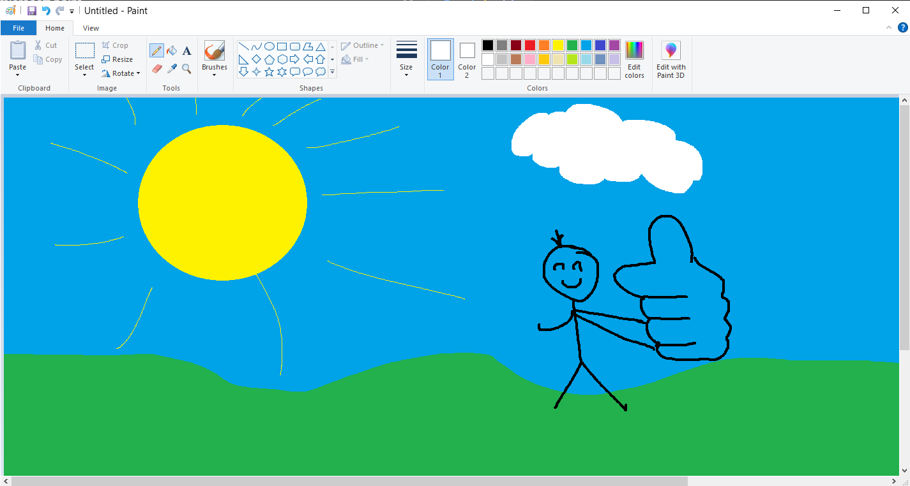

Microsoft paint was published in 1985 as a tool to create drawings. it is currently an app on all windows systems including the most recent Windows 11. You can access this app by typing "paint" into the windows search bar.
This chapter demonstrates how to use Microsoft Pain.
Here is drawing of my teacher giving me a good grade on this project!
cool I guess